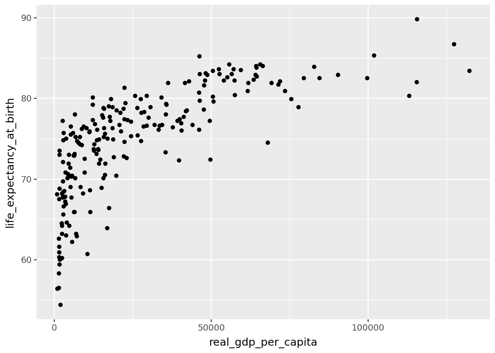
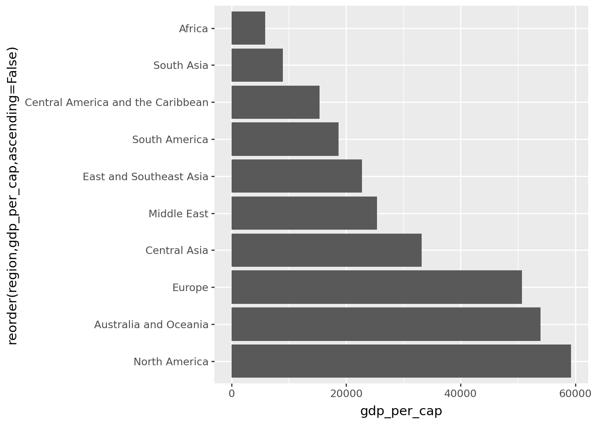
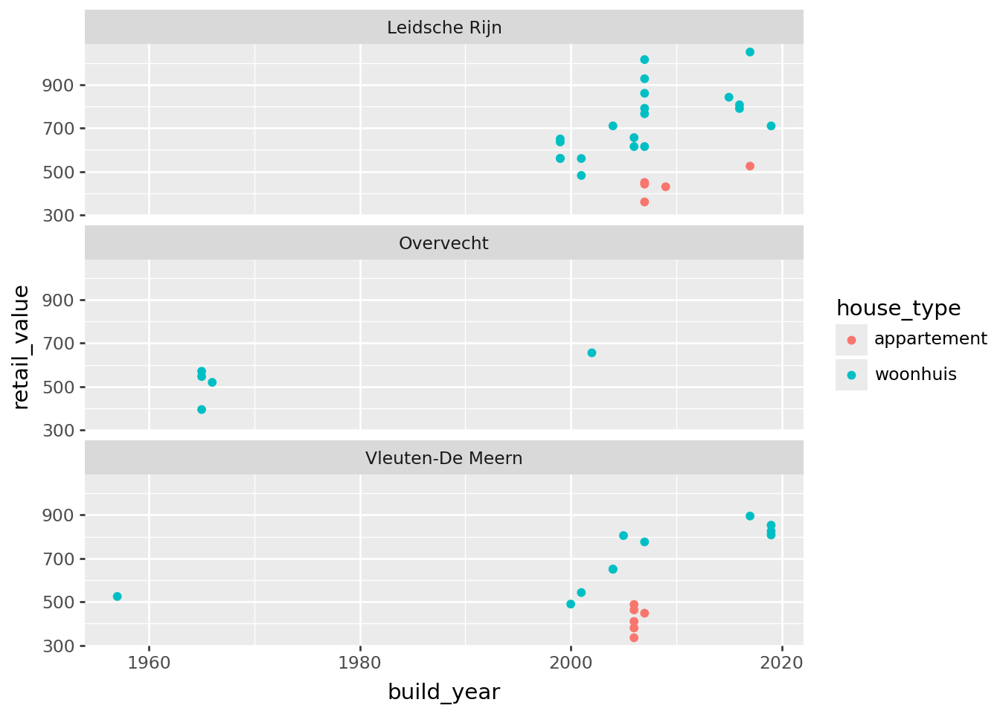
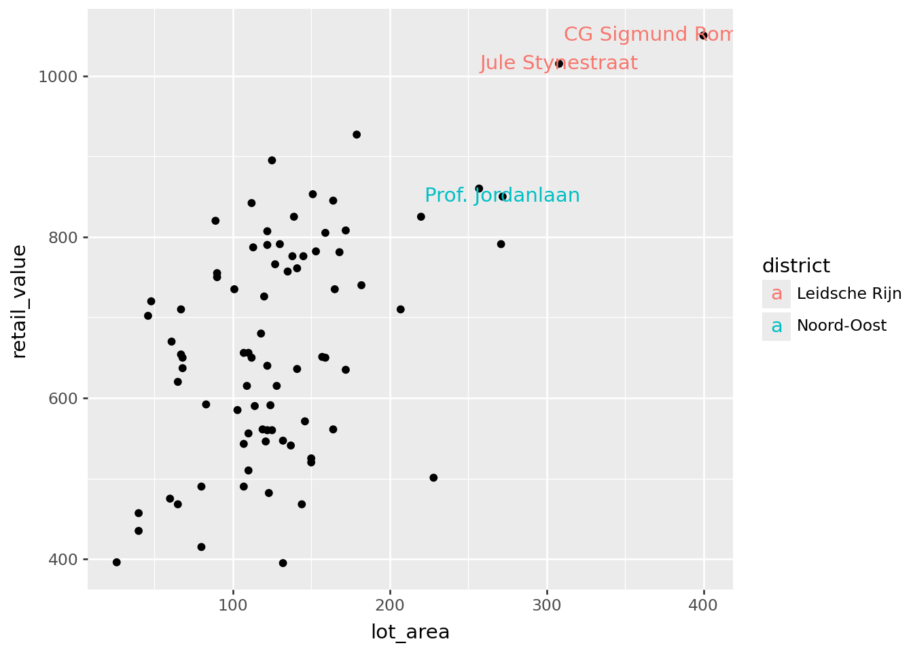
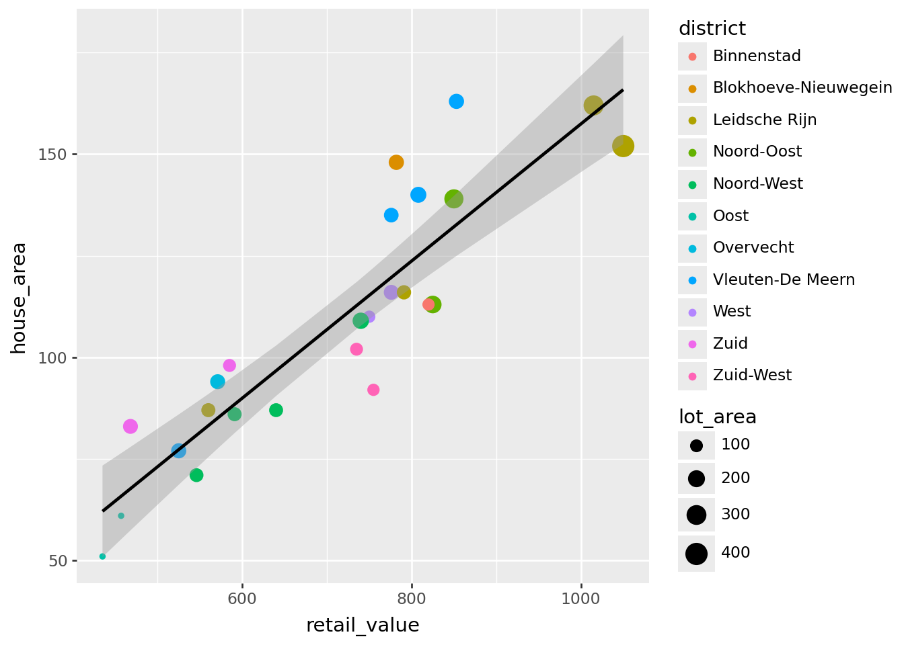

import polars as pl
import polars.selectors as cs
from plotnine import *
from great_tables import GTPractical 4: Data Wrangling + joins
The objective of the tutorial is to give student a chance to practice the data wrangling and joins applying the skills learned through the video lessons on a new dataset.
Preparation
Note
Before you begin your peer-programming session, please, start the new Jupyter notebook environment in your terminal from your project directory using the command you learned in Module 1 of the course.
uv run jupyter labCreate a new notebook and add a text cell atop your document for this practical session. Add a header # Data Wrangling and Joins. Then add a code cell and place the following code there.
Then import the datasets for this practical. Add another code cell below (using the key ‘B’) and paste the following code. This will import .
ut = pl.read_csv("https://bit.ly/data24utrecht", try_parse_dates=True)
cia_area = pl.read_csv("https://bit.ly/data24ciaarea")
cia_commtran = pl.read_csv("https://bit.ly/data24ciacommtran")
cia_ecosec = pl.read_csv("https://bit.ly/data24ciaecosec")
cia_enenv = pl.read_csv("https://bit.ly/data24ciaenenv")
cia_pplsoc = pl.read_csv("https://bit.ly/data24ciapplsoc")
iso_df = pl.read_csv("https://bit.ly/data24-countrycodes")CIA
Answer the following challenges using CIA datasets.
Challenge 1
Challenge
Plot life expectancy (life_expectancy_at_birth) vs gdp per capita (real_gdp_per_capita). Does the plot look like the first plot in the course we made?
(
cia_ecosec
.join(cia_pplsoc, on=['name', 'slug', 'region'], how='inner')
.pipe(ggplot)
+geom_point(aes(x='real_gdp_per_capita', y='life_expectancy_at_birth'))
)C:\Projects\Teaching\LUDataLiteracy\.venv\Lib\site-packages\plotnine\layer.py:374: PlotnineWarning: geom_point : Removed 10 rows containing missing values.
Challenge 2
Challenge
What’s the largest territory (by area) for which we don’t have carbon dioxide emissions?
(
cia_enenv.describe()
)
(
cia_area
.join(cia_enenv, on=["name", "slug", "region"], how="anti")
.sort('area_sqkm', descending=True)
.head(1)
)
shape: (1, 4)
| name | slug | region | area_sqkm |
|---|---|---|---|
| str | str | str | i64 |
| "Svalbard" | "svalbard" | "Europe" | 62045 |
Challenge 3
Challenge
Are there any countries or territories in any of the CIA factbook datasets, for which we do not have the territory size (area)? Whats the total number of airports in these territories?
(
cia_commtran
.join(cia_ecosec, on=["name", "slug", "region"], how="full", coalesce=True)
.join(cia_enenv, on=["name", "slug", "region"], how="full", coalesce=True)
.join(cia_pplsoc, on=["name", "slug", "region"], how="full", coalesce=True)
.select("name", "slug", "region")
.join(cia_area, on=["name", "slug", "region"], how="anti")
.join(cia_commtran, on=["name", "slug", "region"], how="left")
.select('name','region', 'airports')
)
shape: (2, 3)
| name | region | airports |
|---|---|---|
| str | str | i64 |
| "French Southern and Antarctic … | "Antarctica" | 4 |
| "United States Pacific Island W… | "Australia and Oceania" | 2 |
Challenge 4
Challenge
Given the GDP growth rate and population growth rate, what would be the average GDP per capita in every region next year? Show it as a column plot. Is average GDP per capita in the Middle East expected to be higher than the average GDP per capita in the East and Southeast Asia?
(
cia_ecosec
.join(cia_pplsoc, on=["name", "slug", "region"], how="inner")
.with_columns(real_gdp_next_year=pl.col("real_gdp_purchasing_power_parity")*(1+pl.col("real_gdp_growth_rate")/100),
pop_next_year=pl.col("population_total")*(1+pl.col("population_growth_rate")/100))
#Should sum over regions before calc per capita
# else need weights!
.group_by('region')
.agg(pl.col('real_gdp_next_year').sum(),
pl.col('pop_next_year').sum())
.with_columns(gdp_per_cap=pl.col('real_gdp_next_year')/pl.col('pop_next_year'))
.pipe(ggplot)
+ geom_col(aes(x="reorder(region,gdp_per_cap,ascending=False)", y="gdp_per_cap"))
+ coord_flip()
)
Challenge 5
Challenge
How many countries are missing the infant mortality rate? How many of those also don’t have gdp per capita estimate?
💡 You may find it useful to group by the expression like this
💡 You may find it useful to group by the expression like this
.group_by(pl.col('real_gdp_per_capita').is_null())(
cia_pplsoc
.select("name", "slug", "region", "infant_mortality_rate")
.filter(pl.col("infant_mortality_rate").is_null())
.join(cia_ecosec, on=["name", "slug", "region"], how="left")
.select("name", "real_gdp_per_capita")
.group_by(pl.col('real_gdp_per_capita').is_null())
.agg(pl.len())
)
shape: (2, 2)
| real_gdp_per_capita | len |
|---|---|
| bool | u32 |
| true | 7 |
| false | 3 |
Challenge 6
Challenge
Make a great table showing GDP per capita from different sources. Limit the list to top-5 countries by GDP per capita from agriculture. Join in ISO country names. Which country names are not properly matched? Correct the country names in your table and show the country flags using
💡 Use gdp composition and gdp per capita columns in
💡 To manually correct the country names, use the
alpha3 code next to the country name.💡 Use gdp composition and gdp per capita columns in
cia_ecosec💡 To manually correct the country names, use the
.with_columns() expression with.when().then(pl.lit('this'))
.when().then(pl.lit('that'))
.otherwise(pl.col('name'))The pl.lit() is a wrapper for literal values (i.e. strings, corresponding to country names).
cia_agr5 = (
cia_ecosec
.select('name', 'slug','region', cs.starts_with("gdp_composition"),
cs.ends_with("per_capita"))
.with_columns(cs.starts_with('gdp_composition')*pl.col('real_gdp_per_capita')/100)
.filter(cs.ends_with('agriculture').is_not_null())
.sort(cs.ends_with('agriculture'), descending=True)
.head(5)
)
# Join with ISO to see problems
cia_agr5_issues = (cia_agr5
.join(iso_df,left_on="name",right_on="country",how='left')
.filter(pl.col("alpha3").is_null())
# .select("name")[0,"
)
for val in cia_agr5_issues["name"]:
print(val)
## Faroe Islands and Falkland IslandsFalkland Islands (Islas Malvinas)
Faroe Islands(
cia_agr5
.with_columns(name=pl.when(pl.col('name').str.contains("Faroe Islands"))
.then(pl.lit('Faroe Islands (the)'))
.when(pl.col('name').str.contains("Falkland"))
.then(pl.lit("Falkland Islands (the) [Malvinas]"))
.otherwise(pl.col('name'))
)
.join(iso_df, left_on="name", right_on="country", how="left")
.pipe(GT)
.tab_spanner_delim(delim="_", split="last", limit=1, columns=cs.starts_with("gdp_composition"))
.cols_hide(columns=["alpha2", "numeric"])
.cols_move_to_start(columns="alpha3")
.cols_label(alpha3="")
.fmt_number(columns=cs.starts_with("gdp_comp"), decimals=0)
.fmt_flag(columns="alpha3")
)| name | slug | region | gdp_composition_by_sector_of_origin | real_gdp_per_capita | |||
|---|---|---|---|---|---|---|---|
| agriculture | industry | services | |||||
| Falkland Islands (the) [Malvinas] | falkland-islands-islas-malvinas | South America | 29,028 | 14,585 | 27,187 | 70800 | |
| Faroe Islands (the) | faroe-islands | Europe | 13,370 | 12,942 | 37,394 | 71500 | |
| Greenland | greenland | North America | 11,918 | 10,964 | 42,699 | 68100 | |
| Guyana | guyana | South America | 4,980 | 33,764 | 9,611 | 49800 | |
| Albania | albania | Europe | 3,312 | 3,837 | 8,688 | 18100 | |
Utrecht
Answer the following challenges using Utrecht dataset.
Challenge 7
Challenge
What are top-3 districts with the highest median garden size? Plot the retail values of the properties in these districts against the build year. Which of these districts, do you think is the oldest? There was a one big phase of housing development in two of these districts. When do you think it happened?
💡 This is a filtering join problem. You need to think of it in two phases: first you create summaries and then you join the original dataset to the summaries as a way of subsetting the records.
💡 This is a filtering join problem. You need to think of it in two phases: first you create summaries and then you join the original dataset to the summaries as a way of subsetting the records.
(
ut
.group_by("district")
.agg(pl.col("garden_size").median().alias("avg_garden"))
.sort("avg_garden", descending=True)
.head(3)
.join(ut, on="district", how="left")
.pipe(ggplot, aes(x="build_year", y="retail_value", color="house_type"))
+ geom_point()
+ facet_wrap('district', ncol=1)
)
Challenge 8
Challenge
Reproduce this plot.
💡 You dont need the joins for this, but you do need to supply different data sources for the two layers in your plot.
💡 You dont need the joins for this, but you do need to supply different data sources for the two layers in your plot.

dist_df = ut.group_by("district").agg(
cs.ends_with("coor").median(),
pl.col("dist_from_train").mean().alias("avg_dist_from_train"),
)
(
ut.pipe(ggplot, aes(x="x_coor", y="y_coor", color="dist_from_train"))
+ geom_point(aes(size='lot_area'))
+ geom_label(
data=dist_df, mapping=aes(label="district", color="avg_dist_from_train"))
+ labs(x="x", y="y", size="Lot Area", color="Distance from train")
)Challenge 9
Challenge
Plot the retail values against the lot areas of private houses (woonhuis). Add text labels showing the street name of the top 3 houses in terms of the lot size. Which districts are these houses located in?
💡 You can color the text labels by district to differentiate between them.
💡 You can color the text labels by district to differentiate between them.
top3_houses = (
ut.filter(pl.col("house_type") == "woonhuis")
.sort("lot_area", descending=True)
.head(3)
)
(
ut
.filter(pl.col("house_type") == "woonhuis")
.pipe(ggplot, aes(x="lot_area", y="retail_value"))
+ geom_point()
+ geom_text(data=top3_houses, mapping=aes(label="street", color="district"))
)
Challenge 10
Challenge
Plot the retail retail value vs the house area of the houses whose price per square meter AND lot area are above the respective median values for their district. Color the points by district and show lot area with the point size. Is the relationship linear?
med_df=(
ut
.with_columns(ppsqm = pl.col("retail_value")/pl.col("house_area"))
.group_by("district")
.agg(pl.col('ppsqm').median().name.prefix('median_'),
pl.col('lot_area').median().name.prefix('median_'))
)
(
ut
.join(med_df, on="district", how="left")
.with_columns(ppsqm=pl.col("retail_value")/pl.col("house_area"))
.filter(pl.col("ppsqm")>pl.col("median_ppsqm"),
pl.col("lot_area")>pl.col("median_lot_area"))
.pipe(ggplot, aes(x="retail_value", y="house_area"))
+geom_point(aes(color="district", size="lot_area"))
+geom_smooth(method="lm")
)